Ture Velo
rogramul
Weekend Activ pe 2 roti va propune peste 50 de Ture de Bicicleta de una sau mai multe zile, in zone incantatoare, pline de obiective interesante, de pe 3 continente!
Toate turele sunt parcurse de noi.
Vrei sa vii si tu? Afla ce facem Weekendul urmator
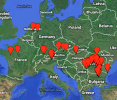
Click pentru Harta Ture
100 de Castele 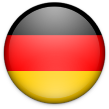
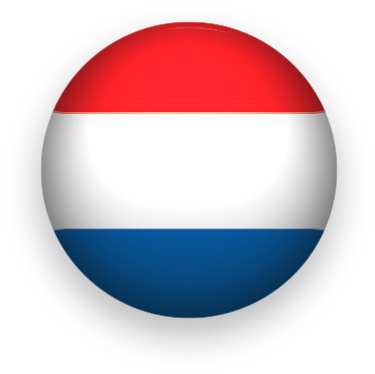
287km 7
O tura de o saptamana, printre Castele mai mari sau mai mici din Germania si Olanda ...
3 Stejari 21km 340m
Un traseu inedit pe dealuri transilvane. Vizitam 3 dintre cele mai frumoase Cetati Sasesti
3 Munti 95km 3000m 2
O tura nu foarte usoara, dar deosebit de frumoasa, prin zone putin umblate din Mtii Ciucas, Siriu si Grohotis
Argedava 12/25/35km
O plimbare pe malul Argesului in care vom descoperi Argedava - misterioasa Capitala a lui Burebista
Arges 25/40/70km
"Pe Arges in jos, Pe un mal frumos" - un traseu plin de vestigii istorice mai vechi sau mai noi ...
Austria - Pe Dunare 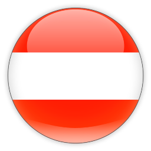
200km 6
Un traseu pitoresc, plin de locuri interesante, pe malul Dunarii, intre Passau si Melk ...
Azuga 24/32/38km 1100
Sunt 3 variante de trasee ce strabat zone pitoresti, pe poteci frumoase, pline de Povesti ...
Balchik 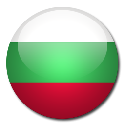
20/30km 2
O tura frumoasa, pe dealurile Dobrogei de Sud. In ziua a doua vizitam Palatul Reginei Maria
Baneasa 17km
O tura la marginea Bucurestiului, pe traseele Tabere cu Suflet din Padurea Baneasa ...
Blue Danube 25/50 km
Un traseu pe malul Dunarii, intre Budapesta si Szentendre. La intoarcerea putem merge cu vaporasul ...
BodenSee 230/285 km 6
Un traseu frumos, prin 3 tari, la Cascadele Rinului si in jurul lacului BodenSee ...
Bucsani 25km
Zimbraria Bucsani este un loc deosebit, pe care va invitam sa il descoperim impreuna:) ...
Bustenari 20/35km 600m
Sunt doua variante de traseu, una dificila, cu urcari sustinute, alta mai "soft", cu obiective turistice incluse ...
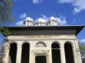
Caldarusani 20km
Tura Manastirilor de la Caldarusani cuprinde 2 manastiri si o rezervatie naturala...
Calugareni 17km
Cazanele Dunarii 100km 1200 2
Cazanele Dunarii este un loc pe cat de spectaculos, pe atat de bogat in vestigii ale trecutului ...
Cerna 120km 700 2
O tura la Izvoarele Cernei in care vom strabate o zona calcaroasa, pline de monumente ale naturii! ...
Cernica 20/30km
O tura nu foarte dificila, prin padurile si pe langa lacurile din apropierea Bucurestiului ...
Cetatile Sasesti 110km 3zile
O plimbare la Cetatile Sasesti este o Calatorie in timp, cu peisaje de vis si Povesti incantatoare:) ...
Cheile Balutei 25km 600m
O tura frumoasa, intr-o zona interesanta,cu fomatiuni carstice si alte atractii naturale! ...
Cheile Nerei 60km 1250 2
O tura intr-o zona de o frumusete naturala unica, plina de locuri incantatoare si legende fascinante:) ...
Cheile Sohodolului 36km 500m
O tura spectaculoasa, intr-o lume de
Poveste plina cu fomatiuni carstice! ...
Dolomiti 240km 3500m 6
Drumul Hotilor 190km 3zile
Traseul strabate vechiul drum al hotilor de cai ce coboara din Transilvania in Tara Romaneasca ...
Drumul Legionarilor 16km 400m
O tura usoara, in jurul orasului Sinaia, prin locuri mai putin stiute si umblate! ...
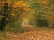
Drumul Romanilor 30km
Traseu pe un drum pe cat de frumos, pe atat de misterios! Localnicii il mai numesc si Drumul Hotilor de Cai ...
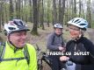
Drumul Vinului 33km 300m
Tura
"surprinzator de frumoasa" , prin Dealurile Subcarpatilor, cu plecare si sosire la Crama Seciu ...
Drumul Voievozilor 25km
Un traseu inedit, in care vom vedea biserci, curti domnesti si alte monumente medievale inedite
Elena 16 km
O tura intr-o zona minunata din centrul Bulgariei, unde timpul parca a incremenit ...
Gradina Reginei 21km
O tura frumoasa in jurul orasului Sinaia, prin locuri de
Poveste , putin stiute si umblate! ...
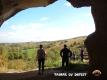
Gramovets 20km
Tura pe Ecopoteca Gramovets din Canionul Lomului. Vizitam bisericile rupestre de la Ivanovo ...
Hagieni 22km
O plimbare frumoasa prin Rezervatia Hagieni, Pestera La Icoane si alte locuri de
legenda
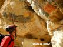
Ivanovo 20/40km
Tura prin Canionul Lomului in care vizitam bisericile rupestre de la Ivanovo si alte obiective UNESCO ...
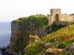
Kaliakra 20/40/60km
O tura in care vizitam cetati antice, rezervatii naturale, orase sapate in stanca
Kapinovo 50 km 900m
O tura solicitanta, care merita insa tot efortul! La final vizitam Manastirea si Cascada Kapinovo
Kaya Bunar 31 km
O tura velo la Cascada Kaya Bunar si Canionul Hotnitsa. Dupa ce ne racorim, descoperim Ecopoteca
Lacul Iovkovtzi 46 km 680m
O tura velo in jurul Lacului Iovkovtsi. La final ne vom delecta cu preparate din bucataria traditionala
Loire a Velo 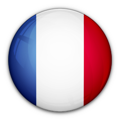
260km 6zile
Vom vizita 15 dintre cele mai frumoase si mai faimoase castele de pe Valea Loirei ...
Marea Moarta 50km
Un traseu impresionant, ce coboara 1000 m prin canioane ce amintesc de Indiana Jones
Mironesti 25km
Un traseu pe malul Argesului, in care vom vedea biserci, curti domnesti si alte monumente medievale inedite
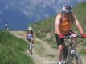
Mtii Baiului 110km 2500m 3
Tura spectaculoasa, trei zile superbe de pedalat, priveliste de vis! Seara avem degustare de sampanie:) ...
Mtii Bucegi 37km 350m
O tura memorabila, la altitudine, pe traseele
On Top of the World . La final vom avea o coborare de vis! ...
Mtii Iezer 18/27/44km 1800m
Iezer-Papusa ofera o varietate de trasee, regina fiind cel care urca la Crucea Ateneului (2409m) ...
Mtii Latoritei 70km 2000m
Un traseu la altitudine, deosebit de spectaculos,
"cu certitudine un must do!" ...
Muktinath 100km -4900m 2
O coborare de 100 km, pe un traseu epic din Himalaya, intre 2 varfuri de 8000m!
Pestera Musina 31 km
Geocomplexul Musina este format din Pestera Musina si cele doua Avene numite 'Ponorite'
Ponoare 100km 3zile
O tura incantatoare, in care vom explora Geoparcul Mehedinti si vom vedea
Podul lui Dumnezeu ...
Scrovistea 20/40 km
"... un loc interesant, cu manastiri vechi de sute de ani, cu rauri maiestoase si lacuri misterioase"
Sinaia 20km 600m
Tura pe Vechiul Drum al Prahovei. Vizitam Schitul Lespezi (sec XVII) si alte vestigii istorice ...
Sinca Veche 70km 2zile
Tura are ca punct terminus Biserica rupestra de la Sinca Veche.
"Un adevarat Popas pentru Suflet" ...
Snagov 10/20km
Un traseu inedit si plin de diversitate, ce se incheie pe malul lacului Snagov!
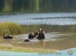
Tusnad 34km 620m
O plimbare velo la Lacul Sf.Ana, Tinovul Mohos, Baile Tusnad si imprejurimi ...
Valea Frumoasa 125km 2700 3
Poate cel mai frumos traseu Tabere cu Suflet, dupa cum ii spune si numele :)...
Veliko Tarnovo 20 km
Veliko Tarnovo - fosta capitala a Taratului Bulgar (1185 - 1396) - este oras plin de istorie
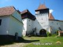
Viscri 20km
O plimbare la una dintre cele 7 Biserici Fortificate Sasesti inscrise in listele de patrimoniu UNESCO
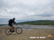
Vulcanii Noroiosi 26km 380m
O tura prin dealurile Subcarpatilor de Curbura, in care vizitam o multime de lucruri interesante ...
Mai multe trasee cat de curand ...

 100 de Castele
100 de Castele  3 Stejari
3 Stejari
 Arges
Arges
 Austria - Pe Dunare
Austria - Pe Dunare  Azuga
Azuga
 Balchik
Balchik  Baneasa
Baneasa
 Blue Danube
Blue Danube 
 Bustenari
Bustenari
 Calugareni
Calugareni
 Cazanele Dunarii
Cazanele Dunarii
 Cetatile Sasesti
Cetatile Sasesti
 Cheile Balutei
Cheile Balutei
 Cheile Nerei
Cheile Nerei
 Cheile Sohodolului
Cheile Sohodolului
 Dolomiti
Dolomiti
 Drumul Hotilor
Drumul Hotilor
 Drumul Legionarilor
Drumul Legionarilor
 Hagieni
Hagieni
 Marea Moarta
Marea Moarta
 Mironesti
Mironesti
 Mtii Bucegi
Mtii Bucegi
 Muktinath
Muktinath
 Pestera Musina
Pestera Musina
 Scrovistea
Scrovistea
 Sinaia
Sinaia
 Sinca Veche
Sinca Veche
 Valea Frumoasa
Valea Frumoasa
 Veliko Tarnovo
Veliko Tarnovo